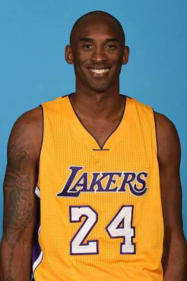
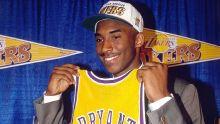
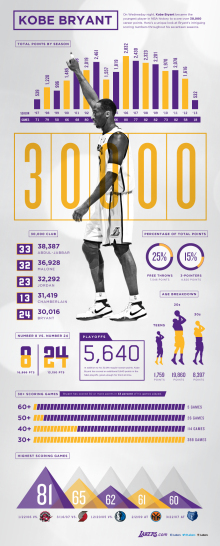
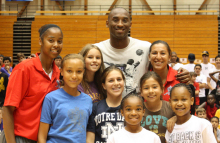

个人简介 运动经历 获奖记录 个人生活 人物争议 社会评价
科比布莱恩特
科比·比恩·布莱恩特（Kobe Bean Bryant，1978年8月23日—2020年1月26日），出生于美国宾夕法尼亚州费城，前美国职业篮球运动员，司职得分后卫/小前锋（锋卫摇摆人），绰号“黑曼巴”/“小飞侠”。
1996年NBA选秀，科比于第1轮第13位被夏洛特黄蜂队选中，后被交易至洛杉矶湖人队，整个NBA生涯都效力于洛杉矶湖人队。
1997年NBA全明星周末，科比赢得了扣篮大赛的冠军，18岁的科比也成为了NBA史上最年轻的扣篮大赛冠军。2007年12月23日，科比在麦迪逊广场花园对阵纽约尼克斯队的比赛中成为史上最年轻的达到20000分的球员（29岁122天）。2017年12月19日，湖人主场对阵勇士，中场时刻为科比的8号和24号两件球衣举行了退役仪式。2018年3月13日，科比凭借和动画师格兰·基恩合作的短片《亲爱的篮球》获第90届奥斯卡最佳短片奖。
2020年1月26日，科比在加州卡拉巴萨斯因直升机事故遇难，享年41岁 ；4月5日，科比正式入选奈·史密斯篮球名人纪念堂；8月13日，美国加州的橙县（Orange County）宣布8月24日为“科比日”。

运动经历

1996年NBA选秀,作为第一位直接从高中参加NBA选秀的后卫球员，科比在1996年NBA选秀中于第一轮第13顺位被夏洛特黄蜂队选中。
最初的赛季（1996-1999），在科比的新秀赛季，他大部分时间作为埃迪·琼斯和尼克·范·埃克塞尔的替补登场。当时他成为NBA历史上最年轻的出场球员（该纪录后来被队友安德鲁·拜纳姆打破），同时他还是NBA历史上最年轻的首发球员。
三连冠时期（1999-2002），随着1999年菲尔·杰克逊来到湖人队执教，科比的命运发生了改变。经过几年的稳步进步，科比已经成为了联盟中最好的得分后卫之一，多次出现在NBA最佳阵容，全明星及NBA最佳防守阵容。
短暂的低潮（2002-2004），接下来的2003-04赛季，湖人队获得了全明星球员卡尔·马龙和加里·佩顿，再次冲击总冠军。在赛季开始前，科比因为性侵犯指控被捕
失望季后赛（2004-2007），2004-05赛季，由于上赛季中发生的事情极大地损坏了科比的声誉，也使他饱受争议和批评。菲尔·杰克逊出版了新书《最后的赛季》（The Last Season: A Team in
Search of Its Soul），在书中详细记述了2003-04赛季湖人的动荡，也同时批评了科比，说他“不可调教（uncoachable）”
MVP赛季（2007-2008），2008年5月6日，官方正式宣布科比荣获NBA最有价值球员奖，是他职业生涯的第一次
蝉联总冠军（2008-2010），湖人队在6场比赛内赢下了西部决赛系列赛，获得西部冠军，并连续第三年晋级NBA总决赛。在与2008年NBA总冠军波士顿凯尔特人队的再次比赛中，在第7场比赛，科比尽管只有24投6中的投篮命中率，还是带领湖人队追回了第三节落后的13分分差并获得总冠军；他在第四节拿到了自己全场最高分23分中的10分，并且全场贡献15个篮板。科比拿到了自己的第5个总冠军，并且蝉联了总决赛MVP奖杯。这是湖人队第一次在NBA7场总决赛系列赛中击败凯尔特人队。科比说这是他5个冠军中最满意的一个冠军
追逐第六冠（2010-2013），2012-13赛季，湖人队得到中锋德怀特·霍华德以及控球后卫史蒂夫·纳什。2012年12月5日对阵黄蜂队，科比成为联盟历史上最年轻（34岁104天）达到30000分的球员，成为继名人堂球员卡里姆·阿布杜尔-贾巴尔、卡尔·马龙、迈克尔·乔丹以及威尔特·张伯伦之后第五位达到这一里程碑的球员
末年的赛季（2013-2016）,2013年11月25日，他与湖人队签订了一份为期两年价值4850万美元的续约合同，这将使他成为第一位为同一支球队效力达到20年的NBA球员。
2014年3月12日，湖人队宣布科比2013-14赛季报销。
获奖记录
21世纪头10年最佳NBA球员
奥运会冠军：2次（2008年北京奥运会，2012年伦敦奥运会）
NBA总冠军：5次（2000，2001，2002，2009，2010）
NBA得分王：2次（2006，2007）
NBA西部冠军：7次（2000—2002，2004，2008—2010）
NBA总决赛MVP：2次（2009，2010）
NBA常规赛MVP：1次（2008）
NBA全明星赛MVP：4次（2002，2007，2009－与沙奎尔·奥尼尔共享，2011）
NBA全明星赛扣篮大赛冠军：1次（1997）
NBA全明星：18次（1998，2000—2016）（注：1999年因劳资纠纷，比赛未举办 ；2010年达拉斯全明星赛、2014年、2015全明星赛因伤退出）
科比球衣退役仪式
科比球衣退役仪式(2张)
8号和24号球衣被湖人队退役（NBA首次在同一球队退役2件球衣）
2020年入选篮球名人堂
2020年入选费城体育名人堂
All-NBA Teams
NBA最佳阵容第一阵容：11次（2002—2004，2006—2013）
NBA最佳阵容第二阵容：2次（2000，2001）
NBA最佳阵容第三阵容：2次（1999，2005）
All-Defensive Teams
NBA最佳防守阵容第一阵容：9次（2000—2004，2006—2011）
NBA最佳防守阵容第二阵容：3次（2001，2002，2012）
All-Rookie Teams
NBA最佳新秀阵容第二阵容：1997
Social Media Awards
NBA社交网络MVP奖（The Social MVP）
NBA2013年度最佳推特奖（The 140 Award）
NBA常规赛季得分总数第一：4次（2003：2461分、2006：2832分、2007：2430分、2008：2323分）『注：2003，2008年得分王的出场次数均比科比少』
1996-1997赛季NBA全明星新秀赛得分王：31分『注：阿伦·艾弗森获得MVP，19分』
2007年美洲男篮锦标赛冠军
NBA现役50大球星第一位（由美国《Sporting News》评选）
2009年美国篮球杂志《SLAM》评出了新版50大巨星，乔丹高居第一，科比位居第12位。
2012年美国著名篮球杂志《DIME》封面人物，获评“21世纪最佳球员”
2009年登上世界著名的时尚杂志《Vogue》的意大利男版10月刊封面
2009年年度冠军（Champion Of The Year）：（由《GQ》杂志评选）
2009年8月2日接受《高端访问》专访（CCTV新闻）
1995阿迪达斯ABCD夏季训练营MVP
1996年麦当劳全美第一队
1996年全美年度最佳高中生：由美国《Today》和《Parade》杂志评选
1996年年度奈史密斯球员（Naismith Player of the Year）
1996年海滩球类经典赛（Beach Ball Classic）MOP（Most Outstanding Player）
1996年Gatorade Circle Of Champions年度最佳球员
第一位在好莱坞格劳曼中国剧院以运动员身份留下足印及手印的明星

个人生活
家庭生活
1999年11月，21岁的科比遇到了17岁的瓦妮莎·兰尼（Vanessa Laine），当时她正为Tha Eastsidaz（一个说唱团体）的单曲"G'd Up"的MV做背景模特。科比当时正决定用一些时间录制自己的hip
hop专辑，但从未发行。后来两个人开始约会，并于6个月后的2000年5月订了婚，当时瓦妮莎还是加利福尼亚州杭丁顿海滩市，玛利娜高中的一名高中四年级学生。为了避免媒体“搜刮新闻”，她是靠自学完成学业的。根据瓦妮莎堂姐莱拉·兰尼（Laila
Laine）的介绍，两个人根本没有婚前契约。但瓦妮莎告诉她科比说过“只爱她一个人”。
他们于2001年4月18日在加利福尼亚州的Dana Point（加州南端的一个海滨城市）举行了婚礼。但是科比的父母、两个姐姐，他的经纪人Arn
Tellem，还有他的湖人队队友都没有出席婚礼。科比的父母因为一系列的原因反对这门婚事。据报道科比的父母认为科比还太年轻，尤其是和他结婚的女人不是一个非裔美国人。这次矛盾导致了科比与家人长达两年的不和，直到科比有了第一个女儿。
科比的第一个女儿名叫纳塔利亚·戴蒙特·布莱恩特，生于2003年1月19日。纳塔利亚出生的影响化解了科比与父母的隔阂。2005年春天瓦妮莎·布莱恩特由于宫外孕导致了流产。2006年5月1日，他们的第2个孩子吉安娜·玛利亚-奥诺尔·布莱恩特出生了
2011年12月16日，瓦妮莎·布莱恩特正式向科比提出离婚，原因是双方之间“无法协调的分歧（irreconcilable
differences）”。在判决书发出之前，布莱恩特一家已经私下解决了所有关于离婚的问题。
科比给自己起的绰号是“黑曼巴（Black Mamba）”，他希望他的篮球技术能拥有这种蛇的能力，那就是“以99%的准确度用最大的速度，快速连续地打击。”
2019年6月22日，科比与瓦妮莎的第四个女儿Capri Kobe Bryant出生。
人物逝世
当地时间2020年1月26日上午10时左右，科比在美国加利福尼亚州南部卡拉巴萨斯市发生的直升机坠毁事故中遇难，年仅41岁。其13岁的二女儿吉安娜也在事故中不幸去世。
当地时间2020年2月7日，科比父女的葬礼在加州科罗纳德尔玛的太平洋景观纪念公园举行。
人物争议
2003年的夏天科罗拉多州，鹰县的行政司法长官接到了19岁的酒店服务生凯特琳-菲贝尔 （Katelyn
Faber）投诉调查科比性侵犯的案件。科比当时正在科罗拉多州接受膝盖的手术治疗，在鹰县的科迪勒拉（Cordillera）酒店中休养。Faber指控科比在准备接受手术前一天的晚上在自己酒店的房间里强奸了她，科比承认与原告发生性关系，但是否认了原告性侵犯的指控。
然而在2004年9月，Faber拒绝再出庭作证，性侵犯的指控也就此被撤销。之后，科比同意为这个事件向Faber道歉，包括向公众道歉：“虽然我相信我们之间的这种接触是双方自愿的，但是我承认对这件事她与我有不同的看法。”
这起案件最后以民事诉讼案件结束。
社会评价
科比前队友、总冠军搭档沙奎尔·奥尼尔：没有言语可以形容我此时的痛苦，我正经历着失去我的侄女吉吉和兄弟科比·布莱恩特。我爱你们，会永远想念你们。我向科比及所有遇难人员的家人表示的慰问。我此时非常痛苦。
